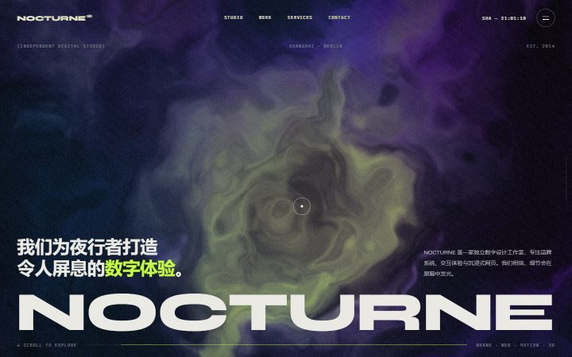
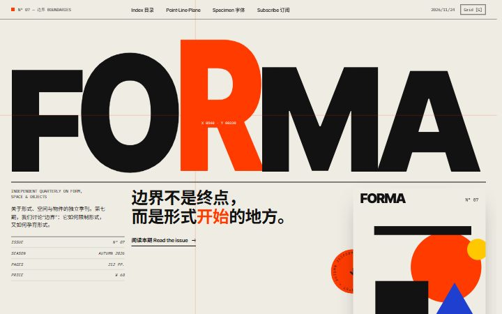
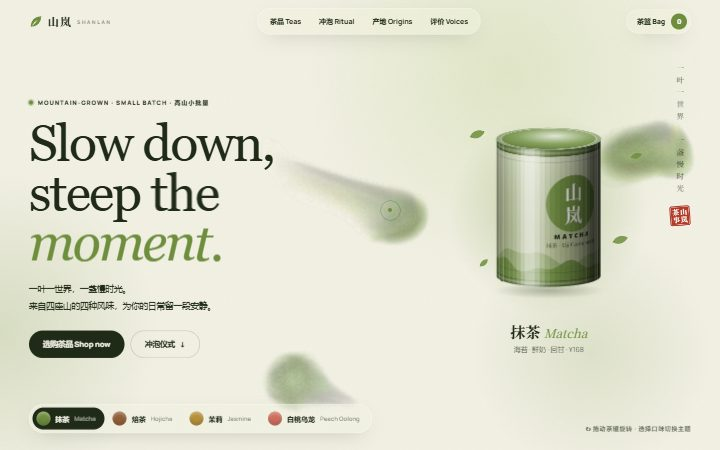
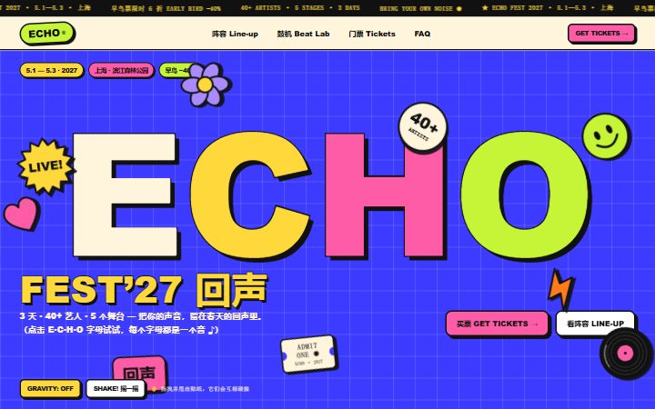

打开 ↗暗夜数字工作室 · Dark cinematic studio

打开 ↗瑞士风设计杂志 · Swiss editorial

打开 ↗有机茶饮品牌 · Organic tea brand

打开 ↗新粗野主义音乐节 · Neo-brutalist festival
四个风格完全不同的网站，每一个都是单个 HTML 文件：不用框架，不需要构建，原生 HTML、CSS、JavaScript 手写完成。WebGL 着色器、CSS 3D、Canvas、Web Audio 和 View Transitions 都用上了。点开任意一张卡片，动动鼠标，点一点、拖一拖。

打开 ↗暗夜数字工作室 · Dark cinematic studio

打开 ↗瑞士风设计杂志 · Swiss editorial

打开 ↗有机茶饮品牌 · Organic tea brand

打开 ↗新粗野主义音乐节 · Neo-brutalist festival